{kind=link}

length comps, whole catch, BB52_06 (plot 2 of 3)
file: comp_lenfit_flt1mkt0_page2.png
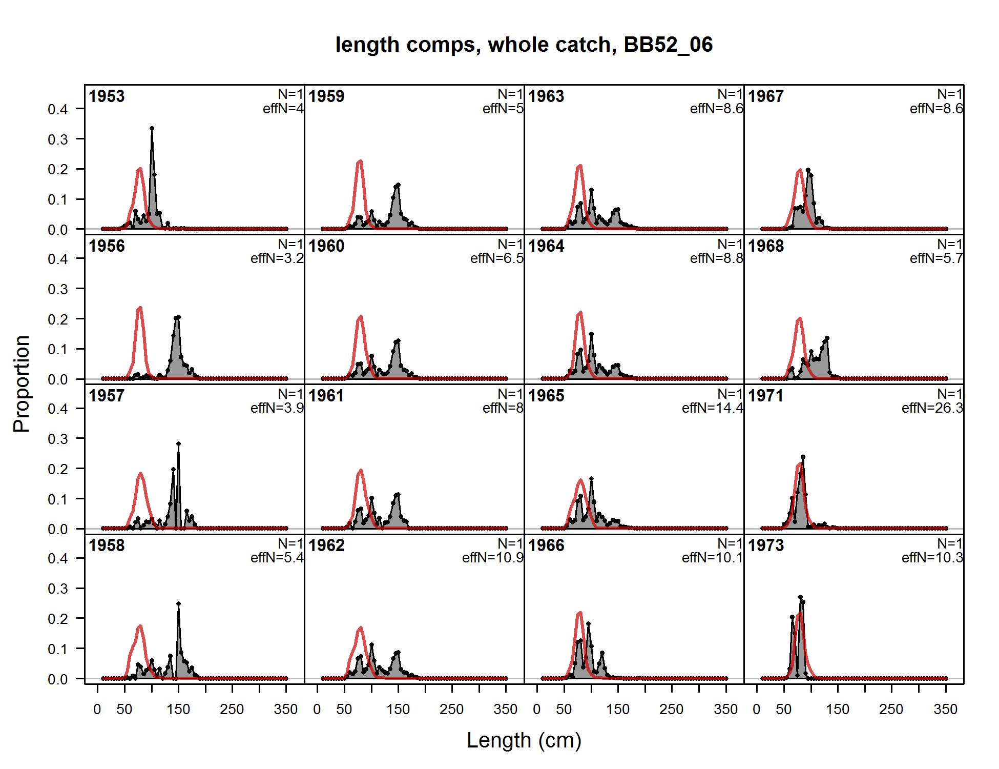
length comps, whole catch, BB52_06 (plot 1 of 3)
file: comp_lenfit_flt1mkt0_page1.png
length comps, whole catch, BB52_06 (plot 2 of 3)
file: comp_lenfit_flt1mkt0_page2.png

length comps, whole catch, BB52_06 (plot 3 of 3)
file: comp_lenfit_flt1mkt0_page3.png
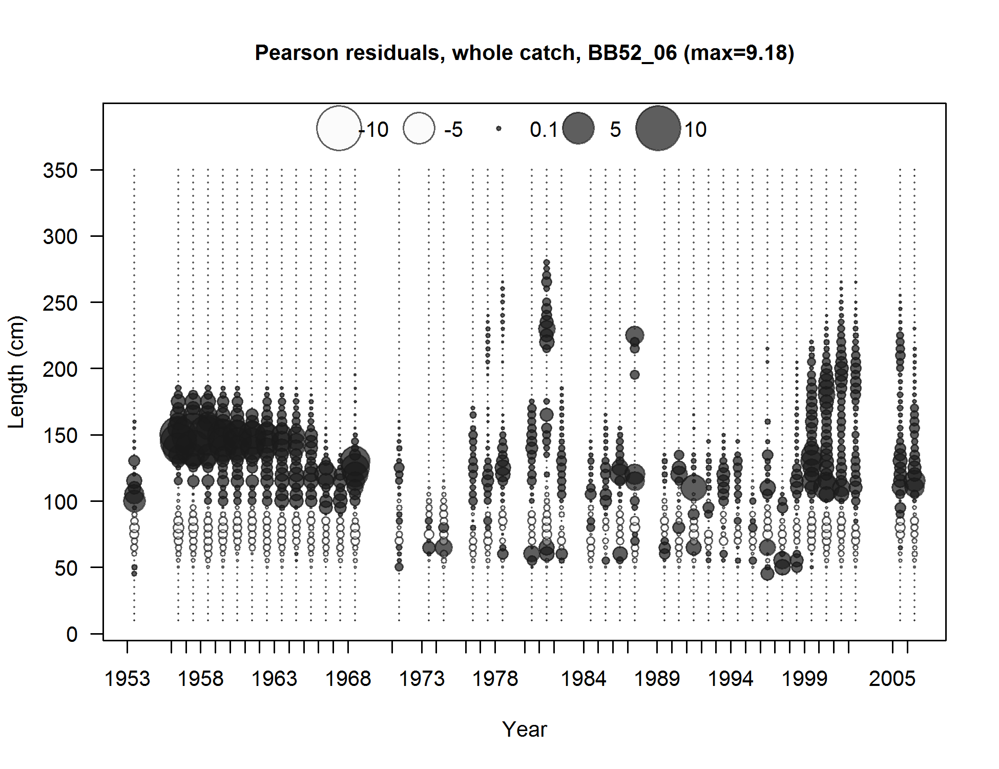
Pearson residuals, whole catch, BB52_06 (max=9.18) (plot 3 of 3)
Closed bubbles are positive residuals (observed > expected) and open bubbles are negative residuals (observed < expected).
file: comp_lenfit_residsflt1mkt0_page3.png
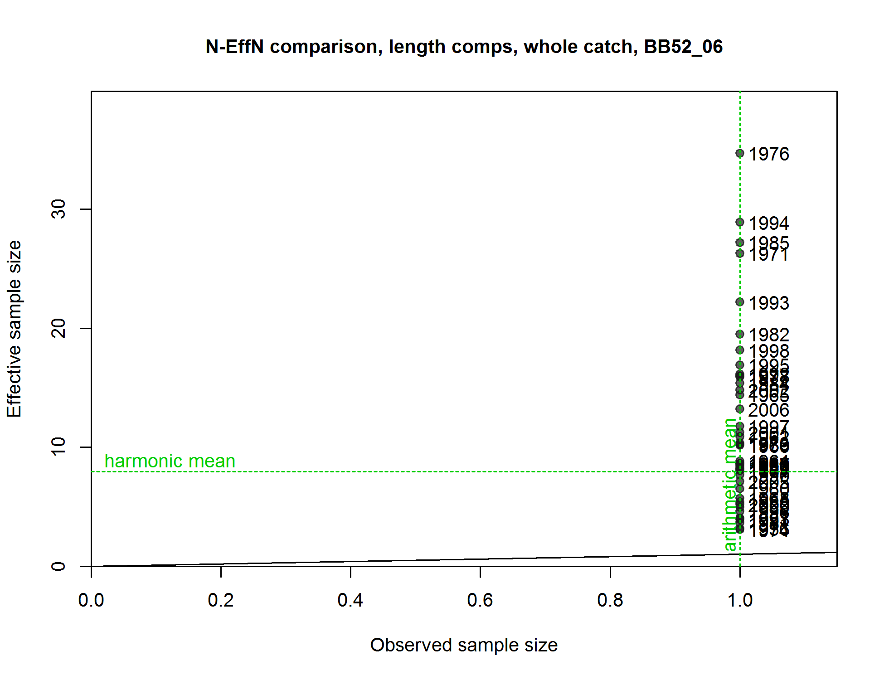
N-EffN comparison, length comps, whole catch, BB52_06
file: comp_lenfit_sampsize_flt1mkt0.png

Francis data weighting method TA1.8 BB52_06
Suggested sample size adjustment (with 95% interval) for len data from BB52_06:
4.0062 (3.0501-6.2862)
file: comp_lenfit_data_weighting_TA1.8_BB52_06.png

length comps, whole catch, BB06_15
file: comp_lenfit_flt2mkt0.png

Pearson residuals, whole catch, BB06_15 (max=2.01)
Closed bubbles are positive residuals (observed > expected) and open bubbles are negative residuals (observed < expected).
file: comp_lenfit_residsflt2mkt0.png

N-EffN comparison, length comps, whole catch, BB06_15
file: comp_lenfit_sampsize_flt2mkt0.png

Francis data weighting method TA1.8 BB06_15
Suggested sample size adjustment (with 95% interval) for len data from BB06_15:
4.3317 (2.3262-26.3597)
file: comp_lenfit_data_weighting_TA1.8_BB06_15.png

length comps, whole catch, LL1 (plot 1 of 3)
file: comp_lenfit_flt3mkt0_page1.png
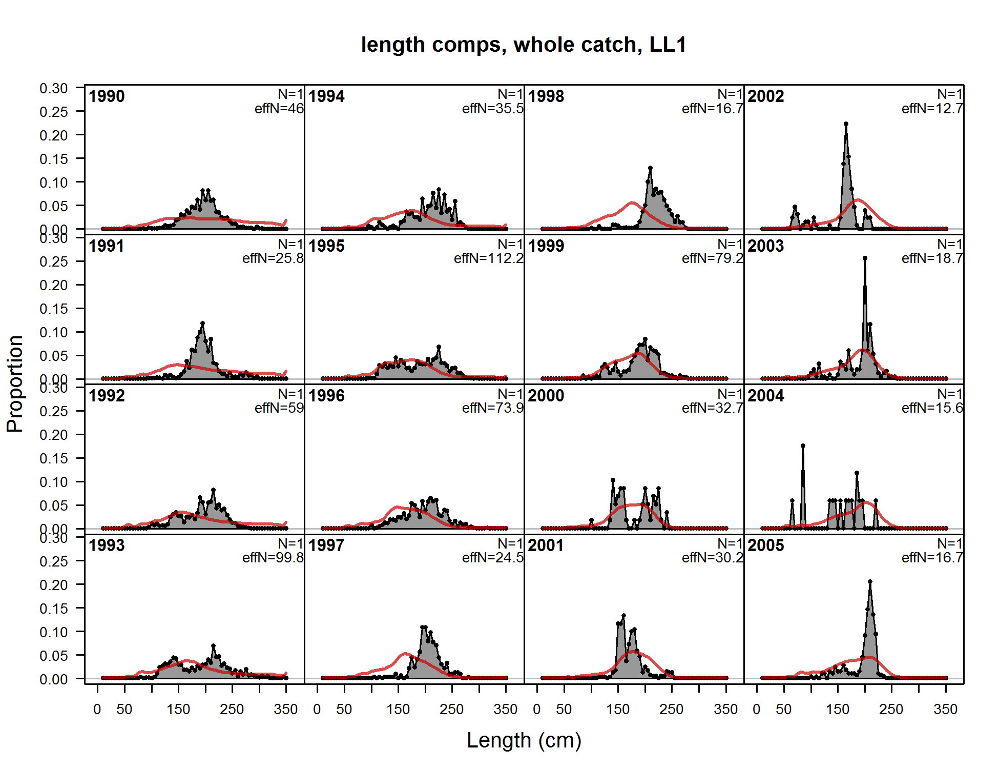
length comps, whole catch, LL1 (plot 2 of 3)
file: comp_lenfit_flt3mkt0_page2.png

length comps, whole catch, LL1 (plot 3 of 3)
file: comp_lenfit_flt3mkt0_page3.png
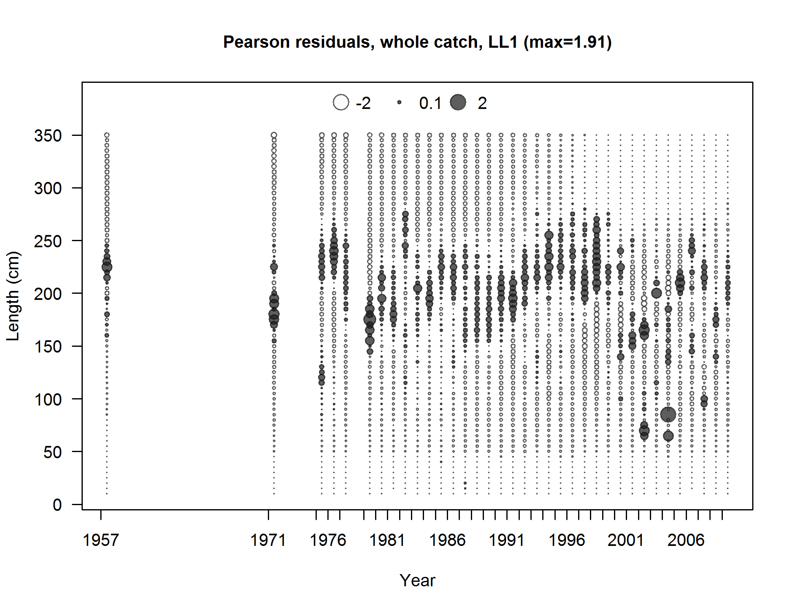
Pearson residuals, whole catch, LL1 (max=1.91) (plot 3 of 3)
Closed bubbles are positive residuals (observed > expected) and open bubbles are negative residuals (observed < expected).
file: comp_lenfit_residsflt3mkt0_page3.png

N-EffN comparison, length comps, whole catch, LL1
file: comp_lenfit_sampsize_flt3mkt0.png

Francis data weighting method TA1.8 LL1
Suggested sample size adjustment (with 95% interval) for len data from LL1:
5.9755 (4.0771-10.56)
file: comp_lenfit_data_weighting_TA1.8_LL1.png
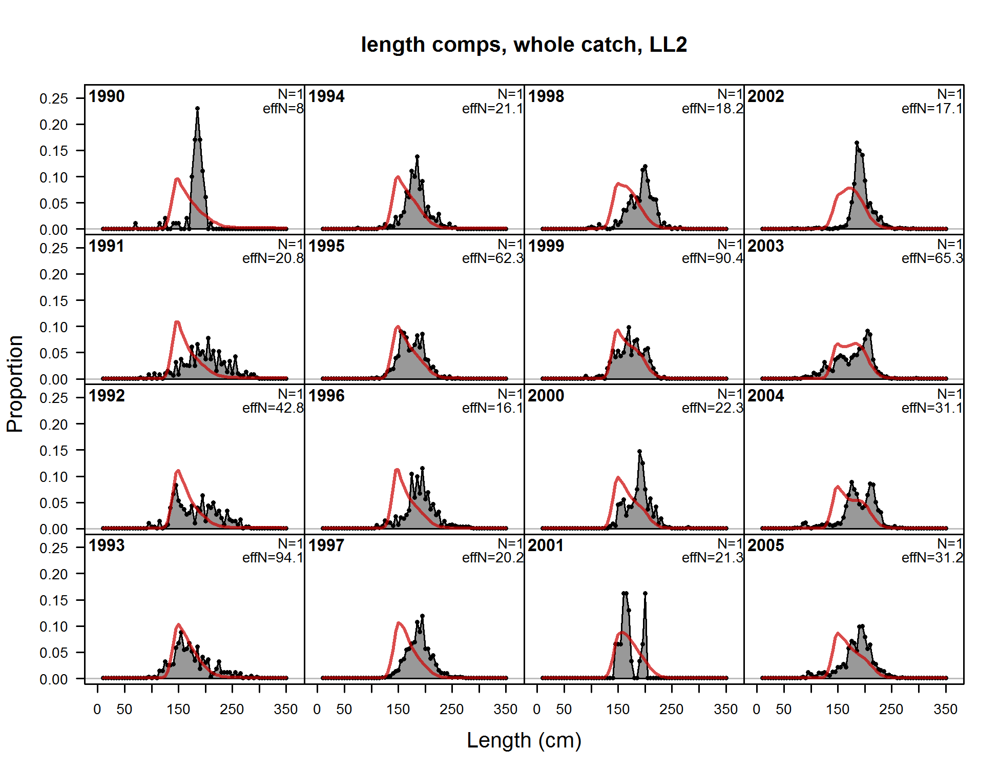
length comps, whole catch, LL2 (plot 1 of 2)
file: comp_lenfit_flt4mkt0_page1.png

length comps, whole catch, LL2 (plot 2 of 2)
file: comp_lenfit_flt4mkt0_page2.png
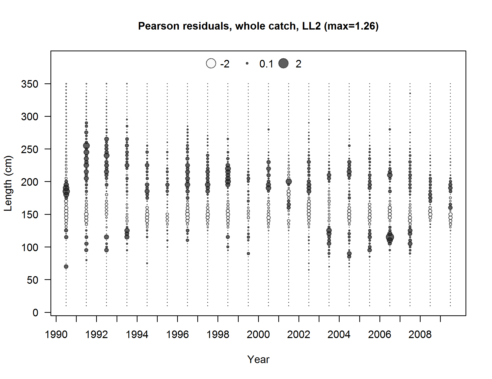
Pearson residuals, whole catch, LL2 (max=1.26) (plot 2 of 2)
Closed bubbles are positive residuals (observed > expected) and open bubbles are negative residuals (observed < expected).
file: comp_lenfit_residsflt4mkt0_page2.png

N-EffN comparison, length comps, whole catch, LL2
file: comp_lenfit_sampsize_flt4mkt0.png

Francis data weighting method TA1.8 LL2
Suggested sample size adjustment (with 95% interval) for len data from LL2:
22.1033 (15.5912-42.9036)
file: comp_lenfit_data_weighting_TA1.8_LL2.png
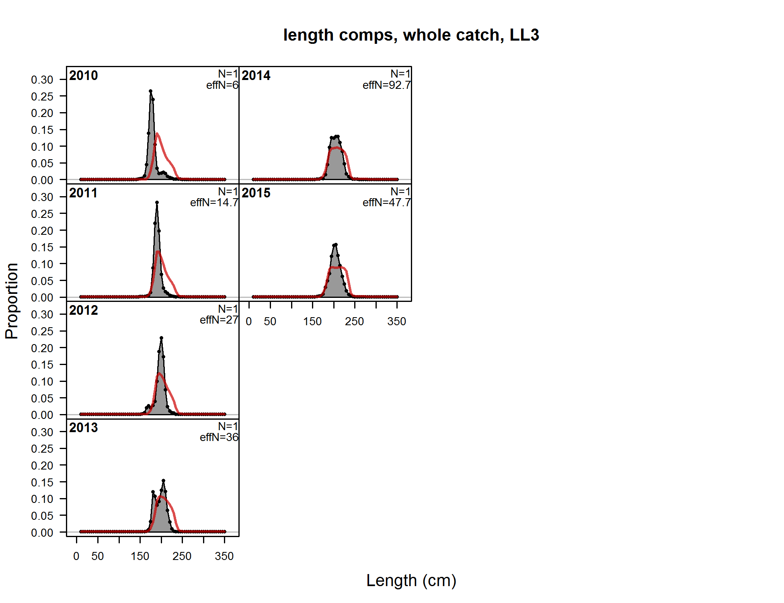
length comps, whole catch, LL3
file: comp_lenfit_flt5mkt0.png
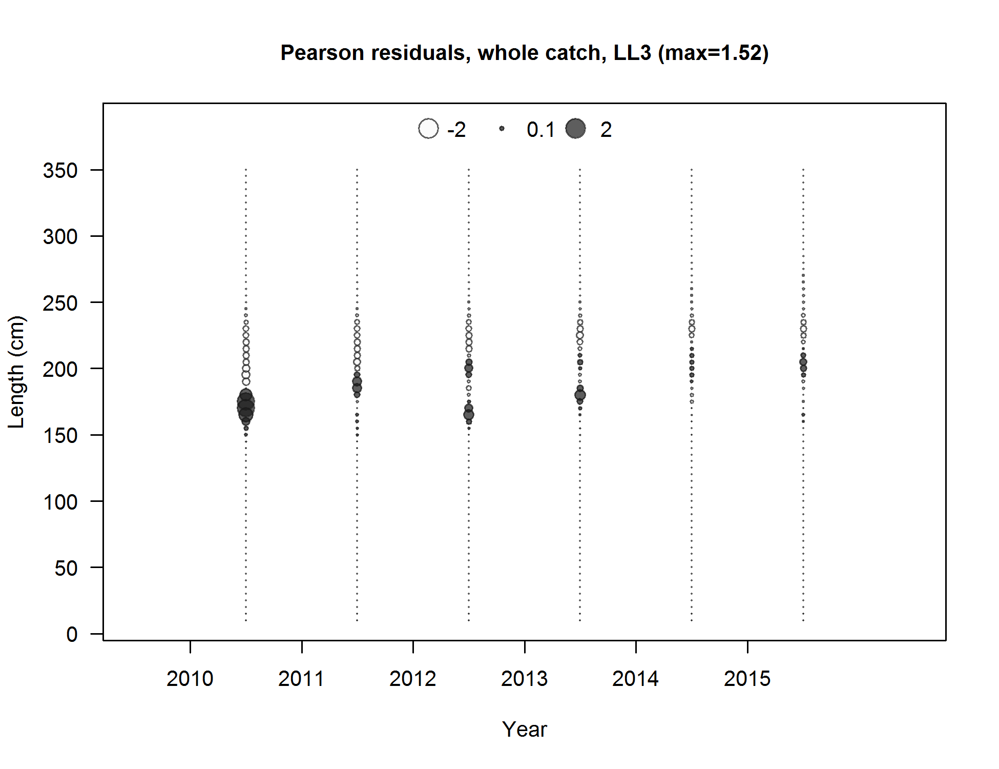
Pearson residuals, whole catch, LL3 (max=1.52)
Closed bubbles are positive residuals (observed > expected) and open bubbles are negative residuals (observed < expected).
file: comp_lenfit_residsflt5mkt0.png
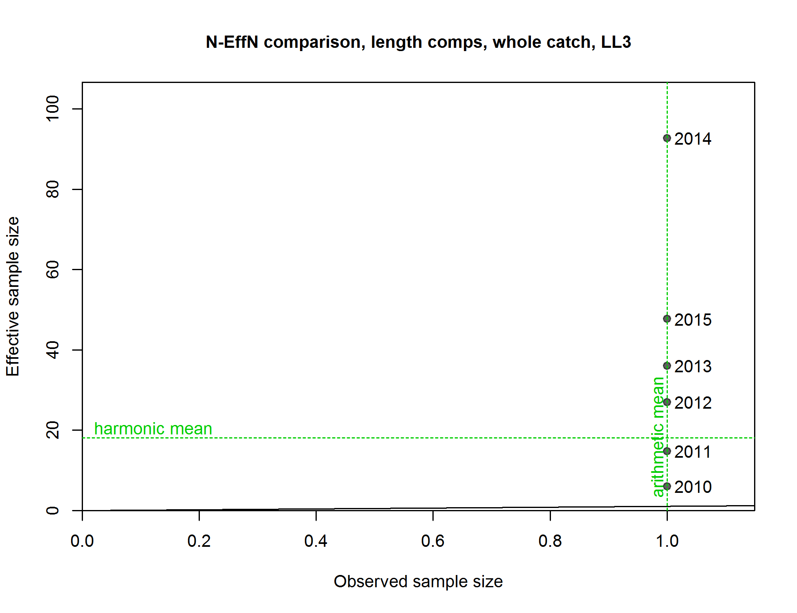
N-EffN comparison, length comps, whole catch, LL3
file: comp_lenfit_sampsize_flt5mkt0.png

Francis data weighting method TA1.8 LL3
Suggested sample size adjustment (with 95% interval) for len data from LL3:
26.4664 (14.5077-363.8052)
file: comp_lenfit_data_weighting_TA1.8_LL3.png

length comps, whole catch, LL4 (plot 1 of 2)
file: comp_lenfit_flt6mkt0_page1.png

length comps, whole catch, LL4 (plot 2 of 2)
file: comp_lenfit_flt6mkt0_page2.png

Pearson residuals, whole catch, LL4 (max=3.28) (plot 2 of 2)
Closed bubbles are positive residuals (observed > expected) and open bubbles are negative residuals (observed < expected).
file: comp_lenfit_residsflt6mkt0_page2.png

N-EffN comparison, length comps, whole catch, LL4
file: comp_lenfit_sampsize_flt6mkt0.png

Francis data weighting method TA1.8 LL4
Suggested sample size adjustment (with 95% interval) for len data from LL4:
2.3083 (1.7188-3.7253)
file: comp_lenfit_data_weighting_TA1.8_LL4.png

length comps, whole catch, PS_NOR (plot 1 of 2)
file: comp_lenfit_flt7mkt0_page1.png
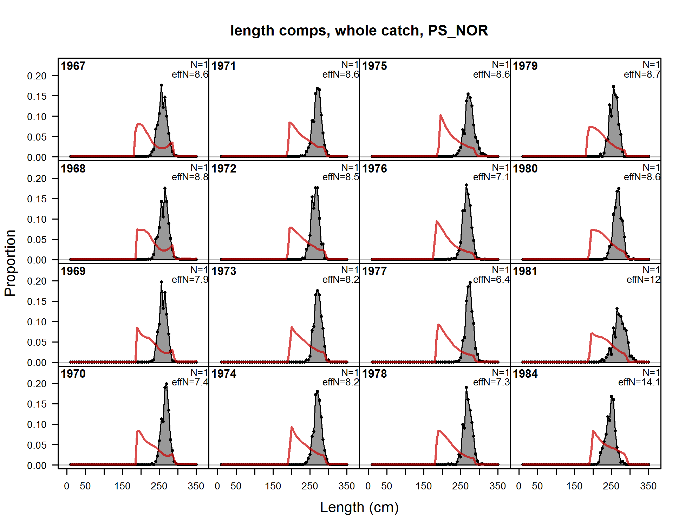
length comps, whole catch, PS_NOR (plot 2 of 2)
file: comp_lenfit_flt7mkt0_page2.png

Pearson residuals, whole catch, PS_NOR (max=1.32) (plot 2 of 2)
Closed bubbles are positive residuals (observed > expected) and open bubbles are negative residuals (observed < expected).
file: comp_lenfit_residsflt7mkt0_page2.png
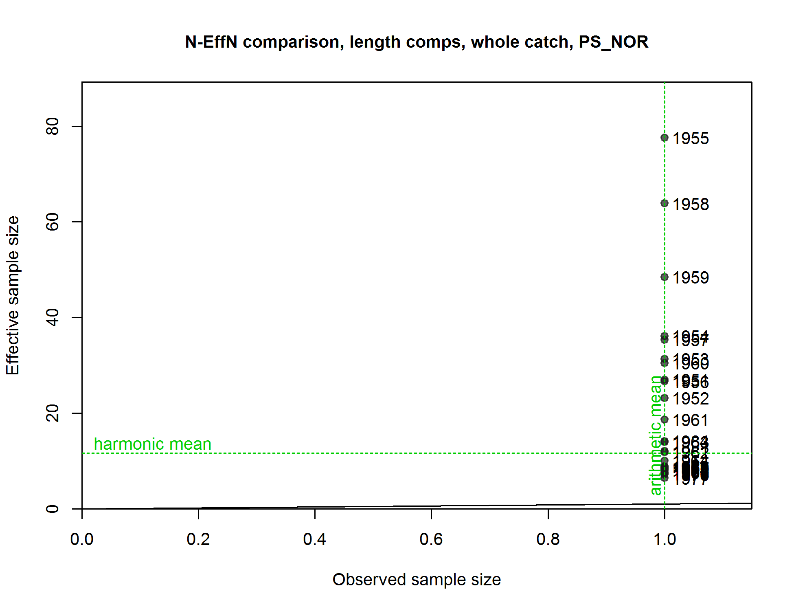
N-EffN comparison, length comps, whole catch, PS_NOR
file: comp_lenfit_sampsize_flt7mkt0.png

Francis data weighting method TA1.8 PS_NOR
Suggested sample size adjustment (with 95% interval) for len data from PS_NOR:
2.86 (2.2553-4.241)
file: comp_lenfit_data_weighting_TA1.8_PS_NOR.png

length comps, whole catch, PS_CRO
file: comp_lenfit_flt8mkt0.png
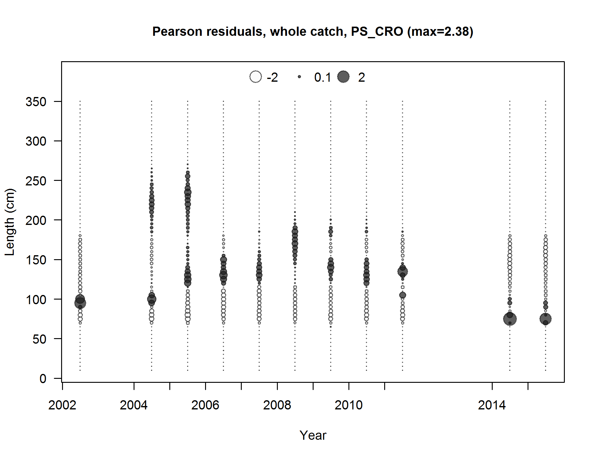
Pearson residuals, whole catch, PS_CRO (max=2.38)
Closed bubbles are positive residuals (observed > expected) and open bubbles are negative residuals (observed < expected).
file: comp_lenfit_residsflt8mkt0.png

N-EffN comparison, length comps, whole catch, PS_CRO
file: comp_lenfit_sampsize_flt8mkt0.png

Francis data weighting method TA1.8 PS_CRO
Suggested sample size adjustment (with 95% interval) for len data from PS_CRO:
2.1127 (1.3901-9.4626)
file: comp_lenfit_data_weighting_TA1.8_PS_CRO.png
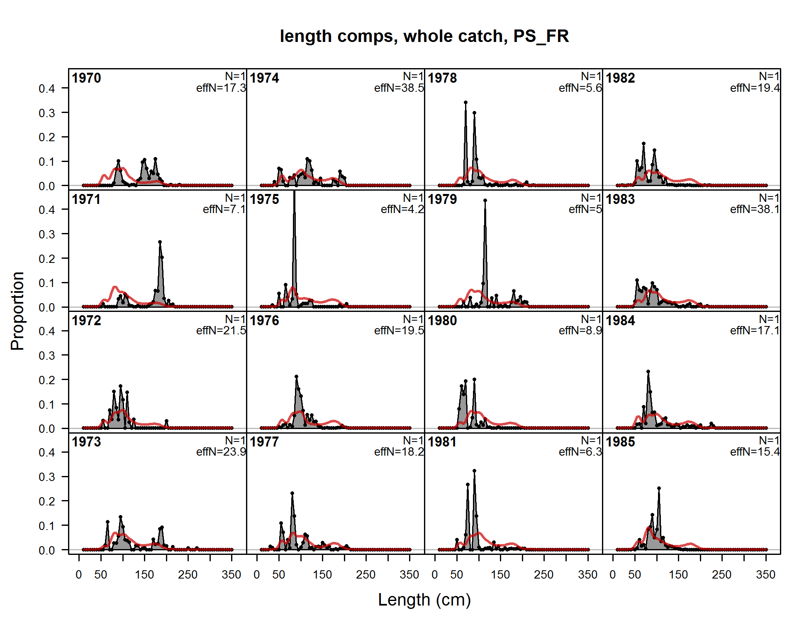
length comps, whole catch, PS_FR (plot 1 of 3)
file: comp_lenfit_flt9mkt0_page1.png

length comps, whole catch, PS_FR (plot 2 of 3)
file: comp_lenfit_flt9mkt0_page2.png
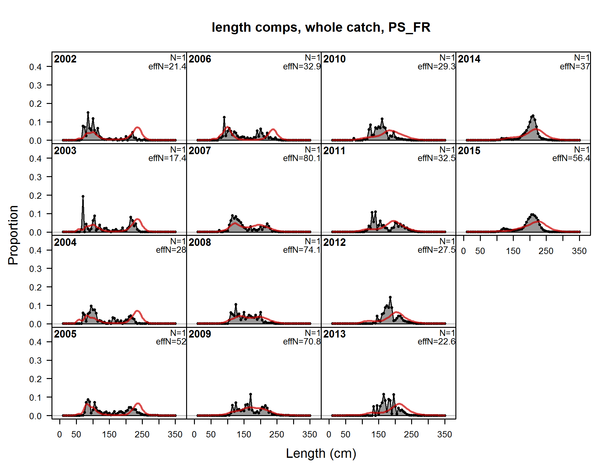
length comps, whole catch, PS_FR (plot 3 of 3)
file: comp_lenfit_flt9mkt0_page3.png

Pearson residuals, whole catch, PS_FR (max=2.21) (plot 3 of 3)
Closed bubbles are positive residuals (observed > expected) and open bubbles are negative residuals (observed < expected).
file: comp_lenfit_residsflt9mkt0_page3.png

N-EffN comparison, length comps, whole catch, PS_FR
file: comp_lenfit_sampsize_flt9mkt0.png
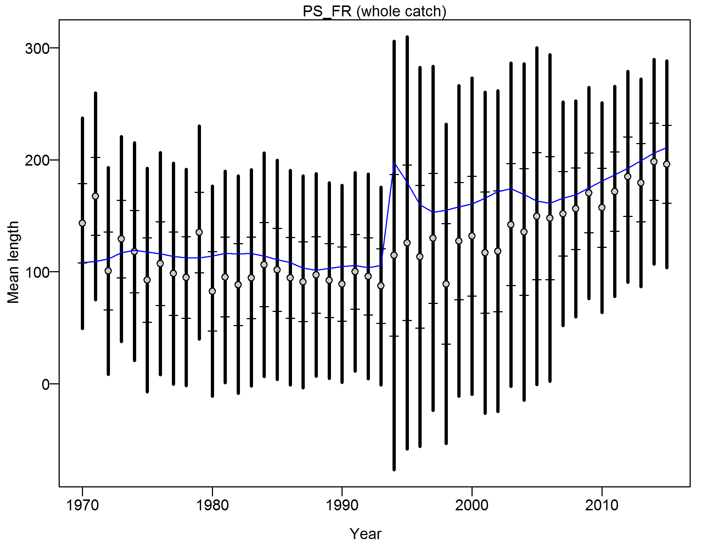
Francis data weighting method TA1.8 PS_FR
Suggested sample size adjustment (with 95% interval) for len data from PS_FR:
7.0248 (3.6684-20.7984)
file: comp_lenfit_data_weighting_TA1.8_PS_FR.png

length comps, whole catch, PSOTHER (plot 1 of 2)
file: comp_lenfit_flt10mkt0_page1.png
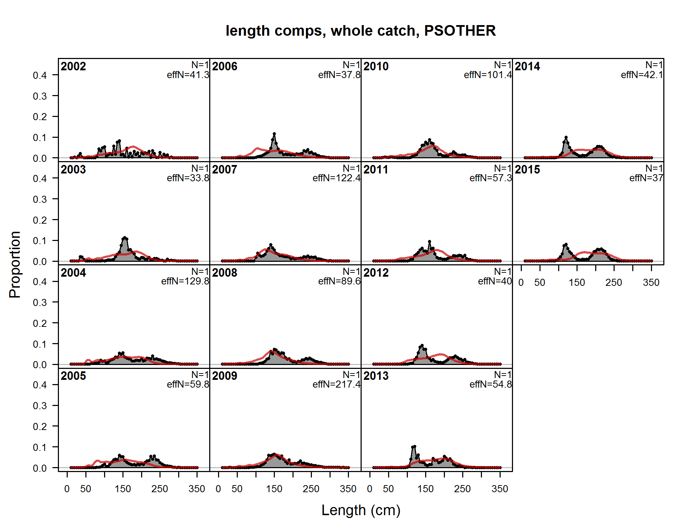
length comps, whole catch, PSOTHER (plot 2 of 2)
file: comp_lenfit_flt10mkt0_page2.png
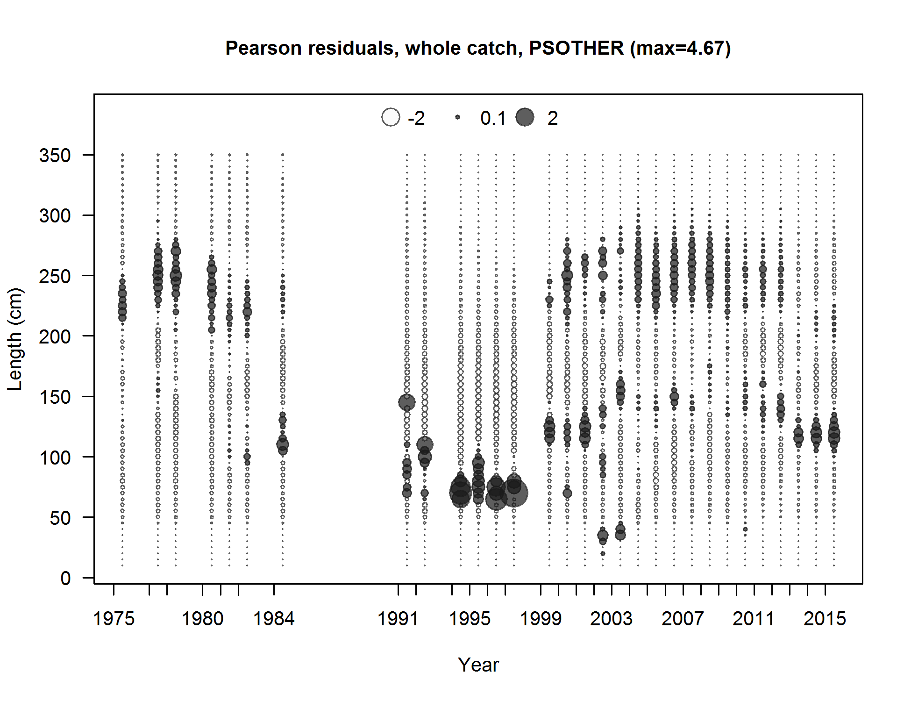
Pearson residuals, whole catch, PSOTHER (max=4.67) (plot 2 of 2)
Closed bubbles are positive residuals (observed > expected) and open bubbles are negative residuals (observed < expected).
file: comp_lenfit_residsflt10mkt0_page2.png
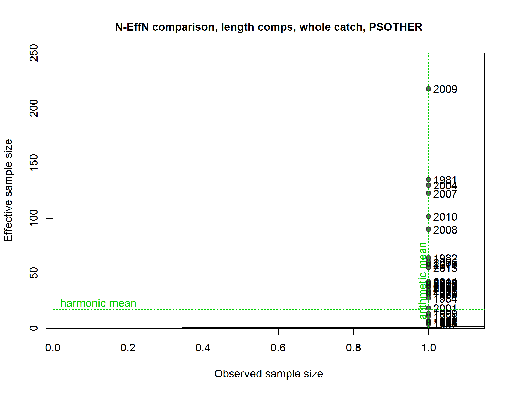
N-EffN comparison, length comps, whole catch, PSOTHER
file: comp_lenfit_sampsize_flt10mkt0.png
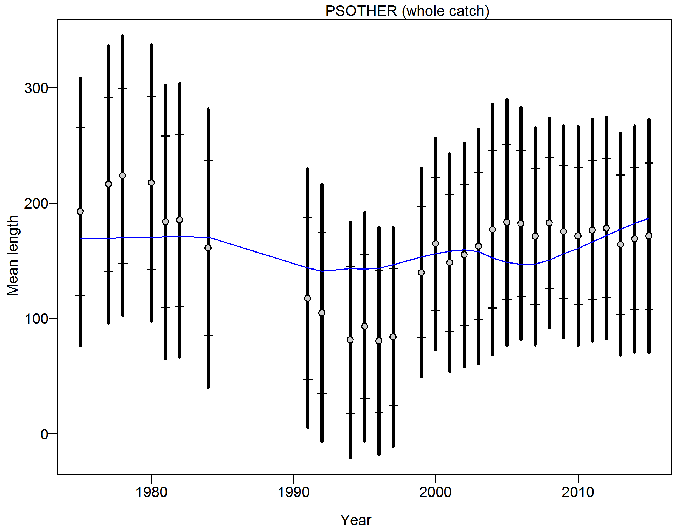
Francis data weighting method TA1.8 PSOTHER
Suggested sample size adjustment (with 95% interval) for len data from PSOTHER:
2.5367 (1.7544-4.8358)
file: comp_lenfit_data_weighting_TA1.8_PSOTHER.png

length comps, whole catch, TRP1 (plot 1 of 2)
file: comp_lenfit_flt12mkt0_page1.png

length comps, whole catch, TRP1 (plot 2 of 2)
file: comp_lenfit_flt12mkt0_page2.png

Pearson residuals, whole catch, TRP1 (max=1.53) (plot 2 of 2)
Closed bubbles are positive residuals (observed > expected) and open bubbles are negative residuals (observed < expected).
file: comp_lenfit_residsflt12mkt0_page2.png

N-EffN comparison, length comps, whole catch, TRP1
file: comp_lenfit_sampsize_flt12mkt0.png

Francis data weighting method TA1.8 TRP1
Suggested sample size adjustment (with 95% interval) for len data from TRP1:
2.2585 (1.5315-5.437)
file: comp_lenfit_data_weighting_TA1.8_TRP1.png

length comps, whole catch, TRP2
file: comp_lenfit_flt13mkt0.png
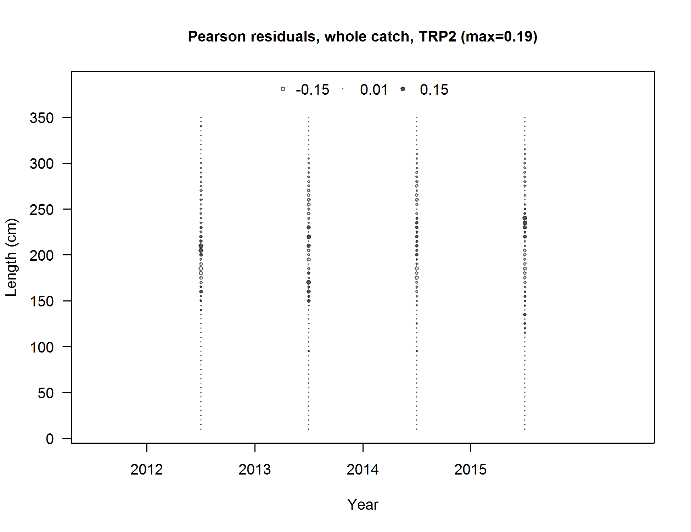
Pearson residuals, whole catch, TRP2 (max=0.19)
Closed bubbles are positive residuals (observed > expected) and open bubbles are negative residuals (observed < expected).
file: comp_lenfit_residsflt13mkt0.png
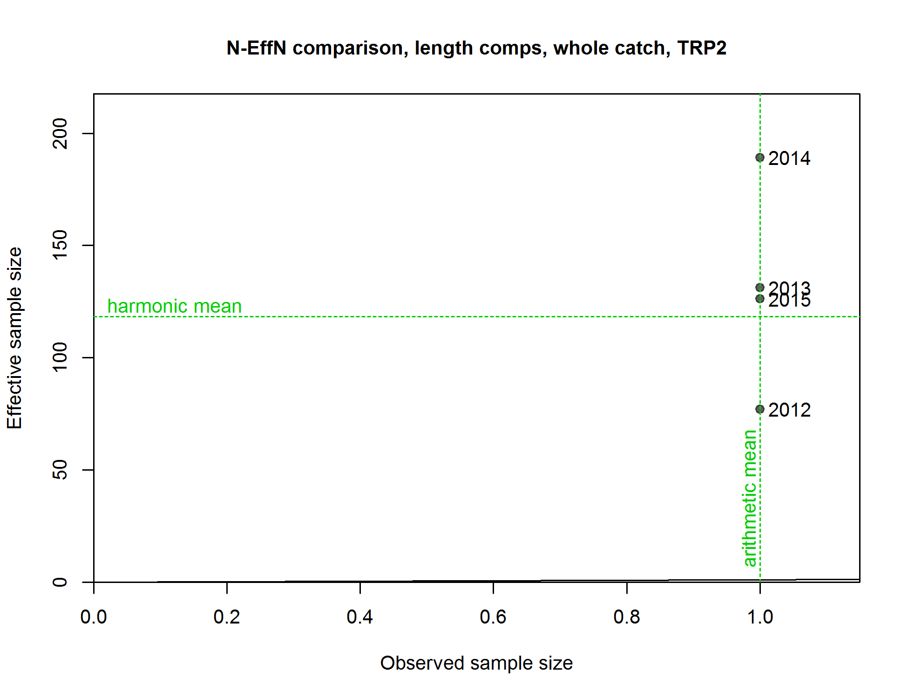
N-EffN comparison, length comps, whole catch, TRP2
file: comp_lenfit_sampsize_flt13mkt0.png

Francis data weighting method TA1.8 TRP2
Suggested sample size adjustment (with 95% interval) for len data from TRP2:
117.0449 (65.0012-Inf)
file: comp_lenfit_data_weighting_TA1.8_TRP2.png
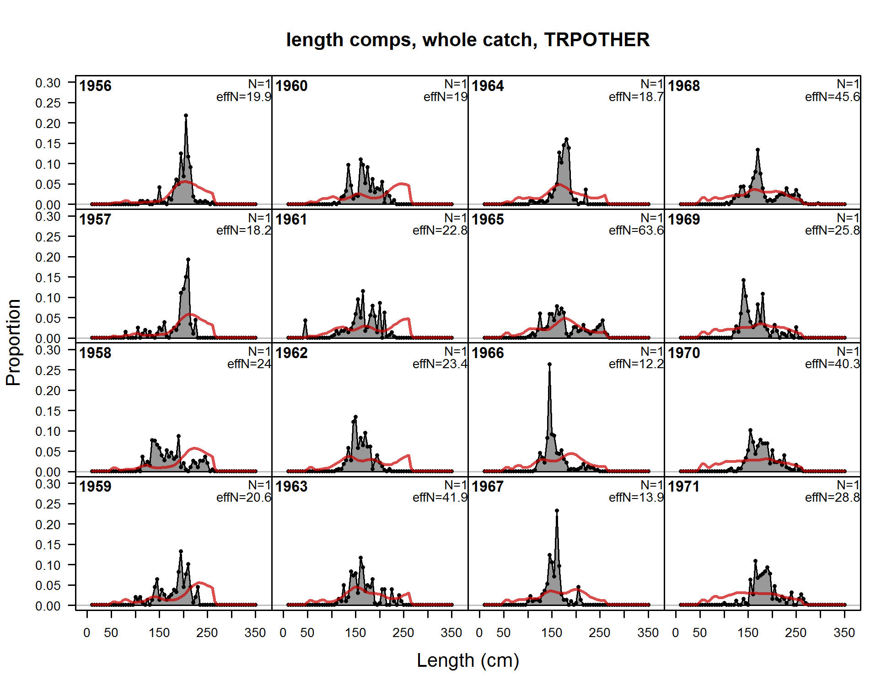
length comps, whole catch, TRPOTHER (plot 1 of 4)
file: comp_lenfit_flt14mkt0_page1.png

length comps, whole catch, TRPOTHER (plot 2 of 4)
file: comp_lenfit_flt14mkt0_page2.png
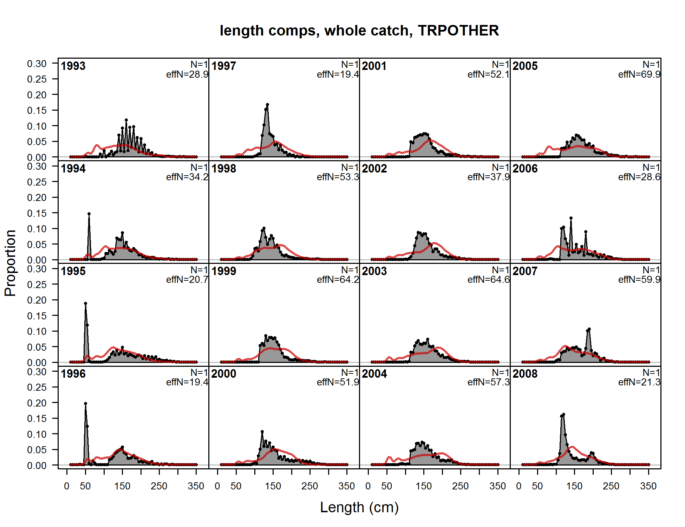
length comps, whole catch, TRPOTHER (plot 3 of 4)
file: comp_lenfit_flt14mkt0_page3.png

length comps, whole catch, TRPOTHER (plot 4 of 4)
file: comp_lenfit_flt14mkt0_page4.png
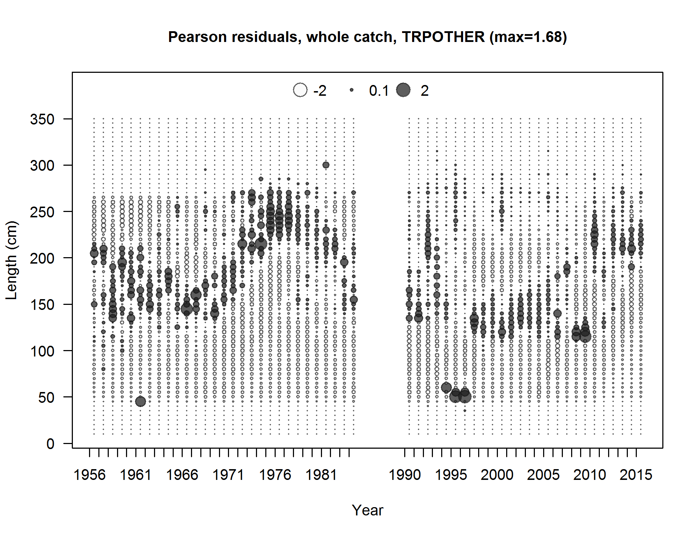
Pearson residuals, whole catch, TRPOTHER (max=1.68) (plot 4 of 4)
Closed bubbles are positive residuals (observed > expected) and open bubbles are negative residuals (observed < expected).
file: comp_lenfit_residsflt14mkt0_page4.png

N-EffN comparison, length comps, whole catch, TRPOTHER
file: comp_lenfit_sampsize_flt14mkt0.png
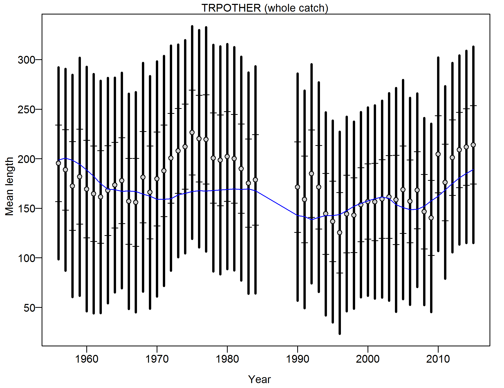
Francis data weighting method TA1.8 TRPOTHER
Suggested sample size adjustment (with 95% interval) for len data from TRPOTHER:
6.2869 (4.9272-8.6852)
file: comp_lenfit_data_weighting_TA1.8_TRPOTHER.png
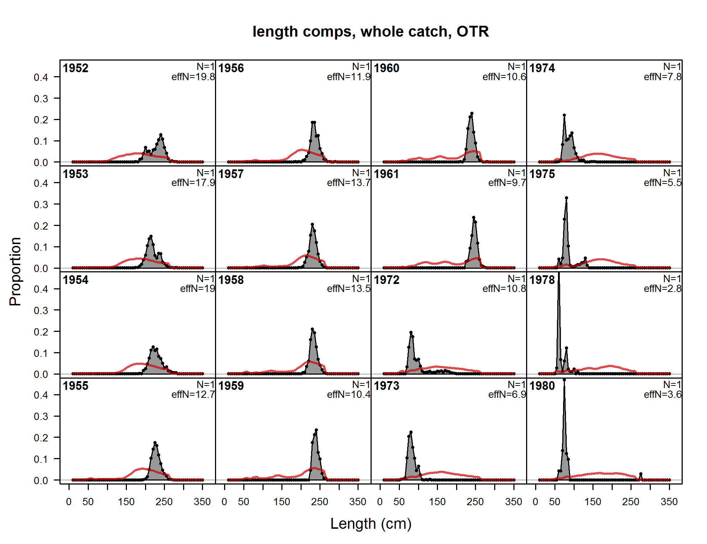
length comps, whole catch, OTR (plot 1 of 4)
file: comp_lenfit_flt15mkt0_page1.png

length comps, whole catch, OTR (plot 2 of 4)
file: comp_lenfit_flt15mkt0_page2.png
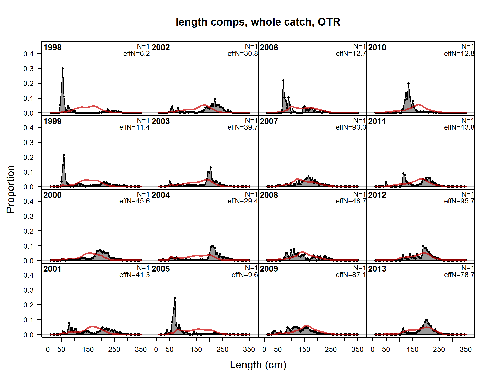
length comps, whole catch, OTR (plot 3 of 4)
file: comp_lenfit_flt15mkt0_page3.png

length comps, whole catch, OTR (plot 4 of 4)
file: comp_lenfit_flt15mkt0_page4.png

Pearson residuals, whole catch, OTR (max=10.14) (plot 4 of 4)
Closed bubbles are positive residuals (observed > expected) and open bubbles are negative residuals (observed < expected).
file: comp_lenfit_residsflt15mkt0_page4.png
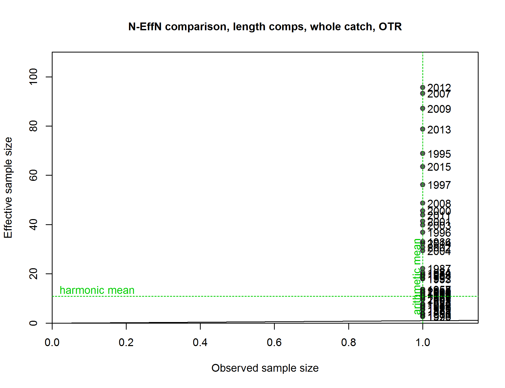
N-EffN comparison, length comps, whole catch, OTR
file: comp_lenfit_sampsize_flt15mkt0.png

Francis data weighting method TA1.8 OTR
Suggested sample size adjustment (with 95% interval) for len data from OTR:
1.4432 (1.2028-1.907)
file: comp_lenfit_data_weighting_TA1.8_OTR.png

length comps, whole catch, aggregated across time by fleet
file: comp_lenfit_mkt0_aggregated_across_time.png
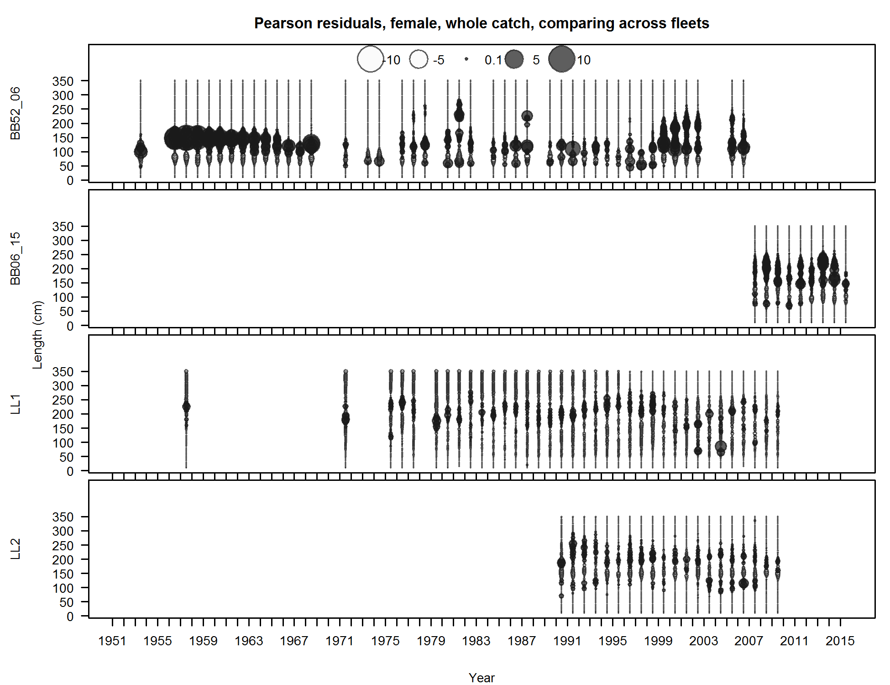
Note: this plot doesn't seem to be working right for some models.
Pearson residuals, female, whole catch, comparing across fleets (plot 1 of 4)
Closed bubbles are positive residuals (observed > expected) and open bubbles are negative residuals (observed < expected).
file: comp_lenfit_sex2mkt0_page1_multi-fleet_comparison.png

Note: this plot doesn't seem to be working right for some models.
Pearson residuals, female, whole catch, comparing across fleets (plot 2 of 4)
Closed bubbles are positive residuals (observed > expected) and open bubbles are negative residuals (observed < expected).
file: comp_lenfit_sex2mkt0_page2_multi-fleet_comparison.png

Note: this plot doesn't seem to be working right for some models.
Pearson residuals, female, whole catch, comparing across fleets (plot 3 of 4)
Closed bubbles are positive residuals (observed > expected) and open bubbles are negative residuals (observed < expected).
file: comp_lenfit_sex2mkt0_page3_multi-fleet_comparison.png

Note: this plot doesn't seem to be working right for some models.
Pearson residuals, female, whole catch, comparing across fleets (plot 4 of 4)
Closed bubbles are positive residuals (observed > expected) and open bubbles are negative residuals (observed < expected).
file: comp_lenfit_sex2mkt0_page4_multi-fleet_comparison.png
{kind=link}
{kind=link}
{kind=link}
{kind=link}
{kind=link}
{kind=link}
{kind=link}
{kind=link}
{kind=link}
{kind=link}
{kind=link}
{kind=link}
{kind=link}
{kind=link}
{kind=link}
{kind=link}
{kind=link}
{kind=link}
{kind=link}
{kind=link}
{kind=link}
{kind=link}
{kind=link}
{kind=link}
{kind=link}
{kind=link}
{kind=link}
{kind=link}
{kind=link}